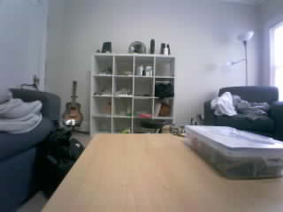
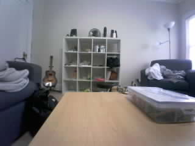

Frame 40: SETTLING | 0.000% changed area
Original JPEG · MeasurementsFrame 47: CALIBRATING | 0.000% changed area
Original JPEG · Measurements
Frame 54: CALIBRATING | 0.000% changed area
Original JPEG · Measurements
Frame 55: CLEAR | 0.000% changed area
Original JPEG · MeasurementsFrame 56: CLEAR | 0.000% changed area
Original JPEG · MeasurementsFrame 57: CLEAR | 0.000% changed area
Original JPEG · MeasurementsFrame 58: CLEAR | 0.000% changed area
Original JPEG · MeasurementsFrame 59: CLEAR | 0.000% changed area
Original JPEG · MeasurementsFrame 60: CLEAR | 0.000% changed area
Original JPEG · MeasurementsFrame 61: CLEAR | 0.000% changed area
Original JPEG · MeasurementsFrame 62: CLEAR | 0.000% changed area
Original JPEG · MeasurementsFrame 63: CLEAR | 0.000% changed area
Original JPEG · MeasurementsFrame 64: CLEAR | 0.000% changed area
Original JPEG · Measurements